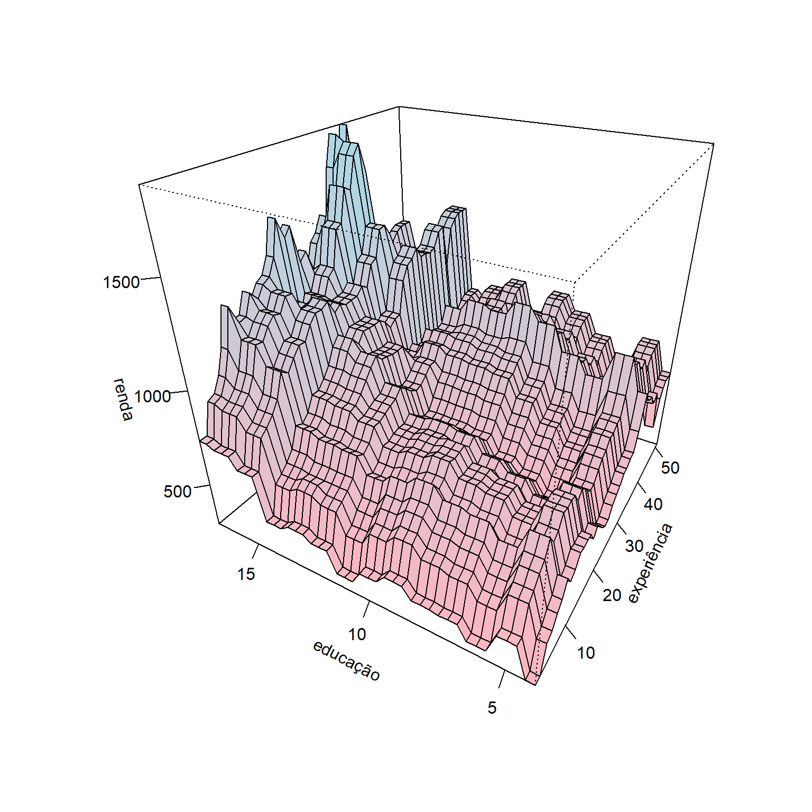

| x1 | x2 | y |
|---|---|---|
| -0.08 | 1.24 | 2.34 |
| 0.84 | 2.29 | 2.76 |
| -0.46 | 2.42 | 2.34 |
| -0.55 | 0.71 | 1.68 |
| 0.74 | 2.07 | 3.01 |
| -0.11 | 1.19 | 1.84 |
| -0.17 | 3.51 | 2.61 |
| -1.09 | 1.73 | 2.38 |
| -3.01 | 3.56 | 2.10 |
| -0.59 | 1.76 | 1.75 |
Reforço de gradiente
Máquinas de reforço de gradiente
As máquinas de reforço de gradiente (gradient boosting machines - GBM) foram propostas por Gerome Friedman e consistem em um método de aprendizado por reforço que visa aproximar o gradiente da função perda, ou de forma mais simples, visa aproximar o erro de previsão e diminuir este a cada iteração do método. O conceito de aprendizado por reforço está relacionado ao fato de o método de certa forma aprender através do erro, uma vez que vai melhorando a previsão a cada tentativa ou iteração a partir dos valores residuais ou de erro observados. O método foi proposto inicialmente considerando árvores de decisão ou regressão, mas poderia ser utilizado também no caso de regressão por mínimos quadrados.
Um algoritmo GBM simplista do método GBM para regressão é apresentado à seguir:
- Defina \(\hat{f}(\mathbf{x})=0\) e \(\varepsilon_i = y_i\) para todos dados de treino.
- Para \(m=1,...,M\):
- Estime uma árvore, \(\hat{f}_m\), para os dados de treino \((\mathbf{x}_i,\varepsilon_i)\), \(i=1,...,N\);
- Atualize \(\hat{f}(\mathbf{x})\) adicionando a árvore de regressão obtida multiplicada por uma taxa de aprendizagem \(\lambda\), isto é, \(\hat{f}(\mathbf{x}) \leftarrow \hat{f}(\mathbf{x}) + \lambda\hat{f}_m(\mathbf{x})\);
- Atualize os resíduos, isto é \(\varepsilon_i \leftarrow \varepsilon_i - \lambda\hat{f}_m(\mathbf{x}_i)\), \(i=1,...,N\);
- Atualize o modelo “impulsionado” ou “reforçado”: \(\hat{f}(\mathbf{x}) = \sum_{m=1}^M\lambda\hat{f}_m(\mathbf{x})\)
O número de iterações ou árvores consideradas, \(M\), pode ser definido por validação cruzada. A taxa de aprendizado, \(\lambda\), geralmente é um valor real muito pequeno, por exemplo 0,01 ou 0,001 e define a taxa que o modelo por refroço aprende, isto é, melhora sua previsão. Quanto menor \(\lambda\), maior o número de árvores, \(M\), necessário para uma boa aproximação.
Geralmente \(\hat{f}_m(\mathbf{x})\) é um modelo de árvore com apenas uma partição e portanto dois nós terminais ou regiões, sendo portanto um aprendiz fraco (weak leaner). Em alguns casos pode ser interessante modelos com árvores com duas partições, o que de certa forma implica em modelos com interação.
Considerando a função perda quadrática comumente usada em problemas de regressão:
\[ \begin{aligned} L = \frac{1}{2}(y - \hat{f}(\mathbf{x}))^2 \end{aligned} \]
A divisão por 2 viabiliza facilitar os cálculos no algoritmo de boosting. Tomando a derivada de \(L\) em relação a \(f\) obtém-se o valor residual ou erro em relação à resposta de interesse, isto é:
\[ \begin{aligned} \frac{\partial L}{\partial f} = y - \hat{f}(\mathbf{x}) = \varepsilon \end{aligned} \]
Portanto, em cada iteração, o algoritmo GBM, ao aproximar uma árvore considerando \(N\) observações das variáveis regressoras, \(\mathbf{x}_i\), em relação à \(N\) valores residuais, \(\varepsilon_i\), \(i=1,...,N\), aproxima o gradiente da função perda que, no caso da função perda quadrática, é o valor residual ou erro, \(\varepsilon\).
Para entender melhor o algoritmo GBM, considere o conjunto arbitrário de dados de treino a seguir, com duas variáveis independentes, \(x_1\) e \(x_2\), e uma dependente contínua, \(y\).
Consideremos para fins didáticos uma taxa de aprendizagem alta, \(\lambda\) = 0.5, e um número pequeno de iterações, \(M = 4\) árvores. O algoritmo inicia fazendo \(\hat{f}(x_1,x_2)=0\) e \(\varepsilon_i = y_i\), isto é (a penúltima coluna seriam os valores previstos do modelo inicial, \(\hat{f} = f\), e a última coluna seria o erro, \(\varepsilon = e\)):
| x1 | x2 | y | f | e |
|---|---|---|---|---|
| -0.08 | 1.24 | 2.34 | 0 | 2.34 |
| 0.84 | 2.29 | 2.76 | 0 | 2.76 |
| -0.46 | 2.42 | 2.34 | 0 | 2.34 |
| -0.55 | 0.71 | 1.68 | 0 | 1.68 |
| 0.74 | 2.07 | 3.01 | 0 | 3.01 |
| -0.11 | 1.19 | 1.84 | 0 | 1.84 |
| -0.17 | 3.51 | 2.61 | 0 | 2.61 |
| -1.09 | 1.73 | 2.38 | 0 | 2.38 |
| -3.01 | 3.56 | 2.10 | 0 | 2.10 |
| -0.59 | 1.76 | 1.75 | 0 | 1.75 |
Fazendo \(m=1\), estima-se a primeira árvore, \(\hat{f} = T\), para os resíduos em função das variáveis independentes, \((x_1,x_2,\varepsilon)_i\), \(i=1,...,N\).
node), split, n, deviance, yval
* denotes terminal node
1) root 10 1.7560 2.281
2) x2 < 1.915 5 0.4505 1.998 *
3) x2 > 1.915 5 0.5049 2.564 *O modelo obtido é usado para atualizar os valores previstos, \(\hat{f}(x_1,x_2)\leftarrow \hat{f}(x_1,x_2) + \lambda\hat{f}_1(x_1,x_2)\) e os resíduos, \(\varepsilon_i \leftarrow \varepsilon_i - \lambda\hat{f}_1(x_1,x_2)\).
| x1 | x2 | y | f | e |
|---|---|---|---|---|
| -0.08 | 1.24 | 2.34 | 0.999 | 1.341 |
| 0.84 | 2.29 | 2.76 | 1.282 | 1.478 |
| -0.46 | 2.42 | 2.34 | 1.282 | 1.058 |
| -0.55 | 0.71 | 1.68 | 0.999 | 0.681 |
| 0.74 | 2.07 | 3.01 | 1.282 | 1.728 |
| -0.11 | 1.19 | 1.84 | 0.999 | 0.841 |
| -0.17 | 3.51 | 2.61 | 1.282 | 1.328 |
| -1.09 | 1.73 | 2.38 | 0.999 | 1.381 |
| -3.01 | 3.56 | 2.10 | 1.282 | 0.818 |
| -0.59 | 1.76 | 1.75 | 0.999 | 0.751 |
Tomando \(m=2\), repete-se o processo, obtendo-se uma nova árvore para os resíduos e atualizando as previsões e os resíduos.
node), split, n, deviance, yval
* denotes terminal node
1) root 10 1.1560 1.1400
2) x1 < -0.315 5 0.3261 0.9378 *
3) x1 > -0.315 5 0.4187 1.3430 *| x1 | x2 | y | f | e |
|---|---|---|---|---|
| -0.08 | 1.24 | 2.34 | 1.6706 | 0.6694 |
| 0.84 | 2.29 | 2.76 | 1.9536 | 0.8064 |
| -0.46 | 2.42 | 2.34 | 1.7509 | 0.5891 |
| -0.55 | 0.71 | 1.68 | 1.4679 | 0.2121 |
| 0.74 | 2.07 | 3.01 | 1.9536 | 1.0564 |
| -0.11 | 1.19 | 1.84 | 1.6706 | 0.1694 |
| -0.17 | 3.51 | 2.61 | 1.9536 | 0.6564 |
| -1.09 | 1.73 | 2.38 | 1.4679 | 0.9121 |
| -3.01 | 3.56 | 2.10 | 1.7509 | 0.3491 |
| -0.59 | 1.76 | 1.75 | 1.4679 | 0.2821 |
Para \(m=3\), tem-se:
node), split, n, deviance, yval
* denotes terminal node
1) root 10 0.8475 0.5702
2) x2 < 1.915 5 0.4252 0.4490 *
3) x2 > 1.915 5 0.2753 0.6915 *| x1 | x2 | y | f | e |
|---|---|---|---|---|
| -0.08 | 1.24 | 2.34 | 1.89511 | 0.44489 |
| 0.84 | 2.29 | 2.76 | 2.29934 | 0.46066 |
| -0.46 | 2.42 | 2.34 | 2.09664 | 0.24336 |
| -0.55 | 0.71 | 1.68 | 1.69241 | -0.01241 |
| 0.74 | 2.07 | 3.01 | 2.29934 | 0.71066 |
| -0.11 | 1.19 | 1.84 | 1.89511 | -0.05511 |
| -0.17 | 3.51 | 2.61 | 2.29934 | 0.31066 |
| -1.09 | 1.73 | 2.38 | 1.69241 | 0.68759 |
| -3.01 | 3.56 | 2.10 | 2.09664 | 0.00336 |
| -0.59 | 1.76 | 1.75 | 1.69241 | 0.05759 |
Finalmente, para \(m=4\), obtém-se o modelo “reforçado” final que consiste na soma ponderada pela taxa de aprendizagem de todos os modelos, isto é, \(\hat{f}(\mathbf{x}) = \sum_{m=1}^M\lambda\hat{f}_m(\mathbf{x})\).
node), split, n, deviance, yval
* denotes terminal node
1) root 10 0.7372 0.2851
2) x1 < -0.315 5 0.3436 0.1959 *
3) x1 > -0.315 5 0.3140 0.3744 *| x1 | x2 | y | f | e |
|---|---|---|---|---|
| -0.08 | 1.24 | 2.34 | 2.082286 | 0.257714 |
| 0.84 | 2.29 | 2.76 | 2.486516 | 0.273484 |
| -0.46 | 2.42 | 2.34 | 2.194589 | 0.145411 |
| -0.55 | 0.71 | 1.68 | 1.790359 | -0.110359 |
| 0.74 | 2.07 | 3.01 | 2.486516 | 0.523484 |
| -0.11 | 1.19 | 1.84 | 2.082286 | -0.242286 |
| -0.17 | 3.51 | 2.61 | 2.486516 | 0.123484 |
| -1.09 | 1.73 | 2.38 | 1.790359 | 0.589641 |
| -3.01 | 3.56 | 2.10 | 2.194589 | -0.094589 |
| -0.59 | 1.76 | 1.75 | 1.790359 | -0.040359 |
Obviamente, o processo poderia seguir para melhorar as previsões. Conforme já elucidado, pode-se definir o número de iterações por validação cruzada. Quanto maior o número de árvores estipulado, recomenda-se que menor seja a taxa de aprendizagem.
Seja um conjunto de dados para prever o rendimento de indivíduos considerando anos de experiência, ocupação, se ele trabalha ou não na indústria, escolaridade, além de fatores sócio-geográficos. Considerando um modelo obtido via GBM com 8000 árvores e \(\lambda = 0,1\), pode-se plotar um gráfico de superfície considerando como variáveis independentes a escolaridade e anos de experiência conforme segue.

Referências
Hastie, T., Tibshirani, R., Friedman, J. H., & Friedman, J. H. (2009). The elements of statistical learning: data mining, inference, and prediction (Vol. 2, pp. 1-758). New York: springer.
Gareth, J., Daniela, W., Trevor, H., & Robert, T. (2013). An introduction to statistical learning: with applications in R. Spinger.